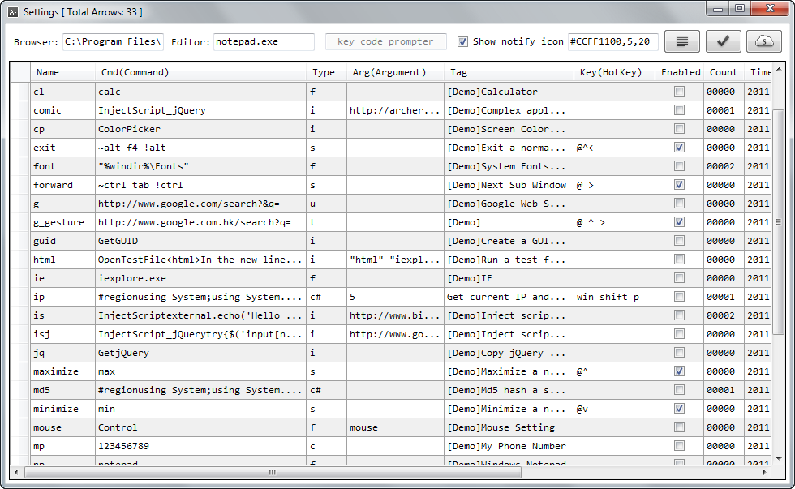

For editing attributes of arrows, press "Ctrl + F" to invoke the search box. The search box will search column first which is useful for finding related items.
Name column supports batch
editing. The [type] of the Name will be reserved when batch editing.
To start editing, press "F2" the same as in Excel.
To selects the full row or column, press"Shift + Spacebar".
To input"return symbol"into the cell, please use the "Alt + 10" method.
For more information
about Data Grid View, please visit
Keyboard and Mouse Handling in Data Grid View.
If forget the key code, use the Key Code Prompter to get it. Key Code Prompter will automatically copy current key code into the clipboard.